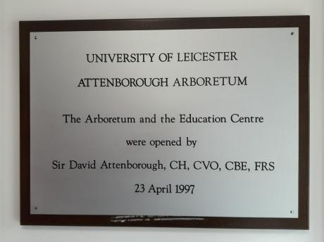

5-23 Carisbrooke Road Leicester LE2 3TQ
The Visitor Centre
The exterior of the visitor centre. A purpose built ramp allows easy wheelchair access to the building. Safety railings separate visitors from the rest of the car park.

The arboretum and visitor centre were opened by Sir David Attenborough in 1997.
The Arboretum development also includes a modern purpose-built classroom. The classroom is available to hire for visiting schools and organisations. If you would like to arrange an educational visit or a guided tour, or would like more details including costs, then please contact us on 0116 252 3666 or email us.
The classroom as viewed towards the entrance doorway.
The kitchen area provides all the necessary equipment; fridge, microwave, kettles, sink and drinking water.
The classroom as viewed from the entrance doorway.
Unisex and disabled toilets are available in the building entrance foyer. The toilets are meticulously cleaned
and restocked every morning.

The disabled toilets. Both toilets have a wash basin, a soap dispenser and a hand drier.

Shutters to the windows mean that the classroom can be easily darkened for light show projections.